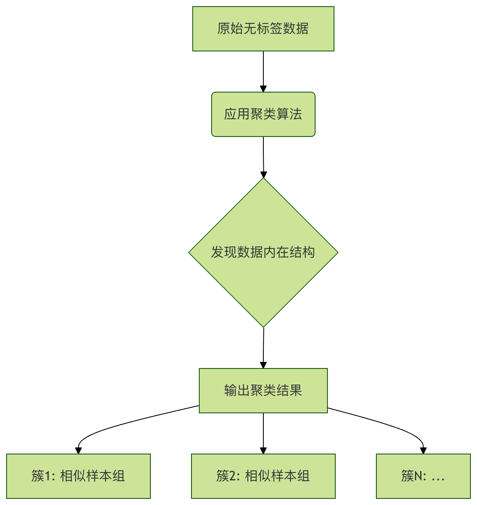
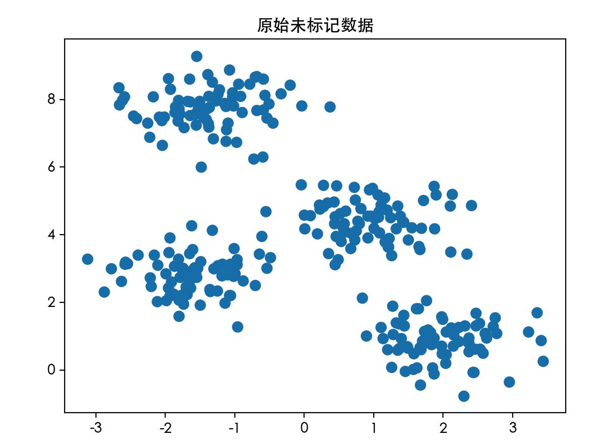
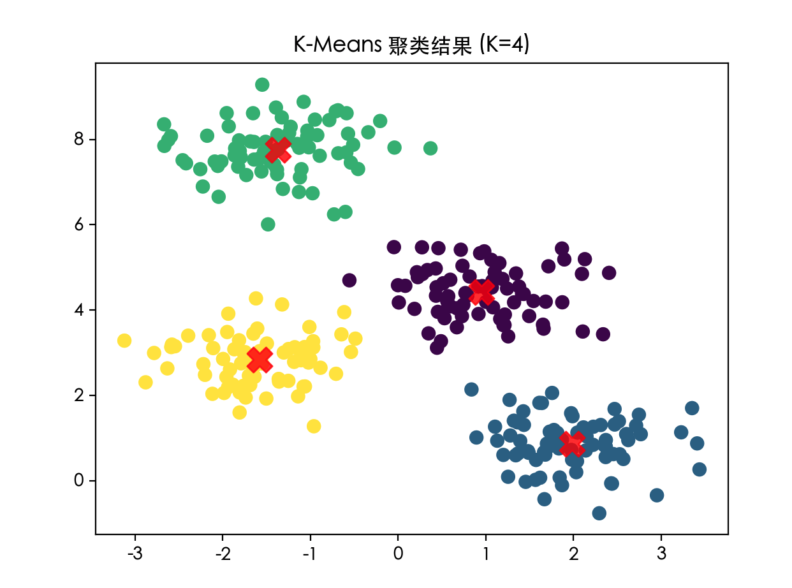

教師なし学習 - クラスタリング
想像してみてください。あなたは巨大な図書館に入り、そこにあるすべての本が整理されずに床に積まれています。あなたの仕事はすべての本を読むことではなく（それには時間がかかりすぎます）、本のテーマに基づいて、例えばSF小説、歴史伝記、料理レシピなどに分類して、いくつかの山に分けることです。この過程で、どの本がどのカテゴリに属するかを示す既成の分類リストはありません。あなたは完全に本の内容、表紙、厚さなどの特徴に頼って、自発的にこれらのグループを発見します。
機械学習において、クラスタリングが行うのはまさにこうしたことです。これは教師なし学習手法であり、事前に正解がラベル付けされていない（つまり「ラベル」がない）データの中から、その内在的な構造やグループを発見することを目指します。
教師なし学習とクラスタリングとは何か？
始める前に、機械学習の二大パラダイムを簡単に区別しておきましょう。
- 教師あり学習は、先生が指導する学習のようなものです。アルゴリズムに大量の問題（特徴データ）と対応する正解（ラベル）を与え、問題から答えへのマッピング関係を学習させます。例えば、アルゴリズムにたくさんの猫と犬の画像（特徴）を見せ、それぞれの画像が猫か犬か（ラベル）を教えると、訓練後には新しい画像を認識できるようになります。
- 教師なし学習は、機械に自ら探索・発見させるようなものです。問題（特徴データ）だけを提供し、答え（ラベル）は提供しません。アルゴリズムのタスクは、データからパターン、構造、関係性を独自に見つけ出すことです。クラスタリングはその中でも最も中心的な技術の一つです。
クラスタリングの核心的な考え方は、データセット内のサンプルをいくつかの互いに交わらない部分集合（クラスタまたはグループと呼ぶ）に分割し、同じクラスタ内のサンプル同士が互いに類似する、異なるクラスタ内のサンプル同士は互いに類似しない。
ここでの類似性は通常、数学的な距離によって測定されます（例：ユークリッド距離）。
距離が近いほど、類似度が高くなります。

定番クラスタリングアルゴリズム：K-Means
K-Meansは最も有名で広く使われているクラスタリングアルゴリズムの一つであり、その考え方は直感的で、実装も比較的簡単です。
アルゴリズムの原理と手順
K-Means の過程は、代表を選出して区画を再編成するようなものと考えることができます：
- クラスタ数 K を決めるまず、データをいくつに分類したいかを決める必要があります。この K 値は事前に指定する必要があり、K-Means の重要なパラメータです。
- 代表（セントロイド）の初期化データ空間内からランダムに K 個の点を選び、各クラスタの初期「中心点」とします。これをセントロイド。
- 住民（サンプル）の割り当てデータセット内の各サンプル点とこの K 個のセントロイドとの距離を計算します。「近い者はそのクラスに属する」という原則に従い、各サンプルを最も距離が近いセントロイドが属するクラスタに割り当てます。これで、すべてのサンプルが K 個のクラスタに分割されます。
- 新しい代表を選出（セントロイド更新）各クラスタにはサンプルの集まりができました。各クラスタのセントロイドを再計算します。新しいセントロイドは、そのクラスタ内のすべてのサンプル点の平均値（平均点）です。
- 反復と収束手順3（割り当て）と手順4（更新）を、セントロイドの位置が大きく変化しなくなるまで（つまりアルゴリズムが収束するまで）繰り返します。この時点で、各サンプルの所属クラスタも変化しなくなります。
コード例と実践
Python のscikit-learnライブラリと簡単なデータセットを使って K-Means をデモンストレーションしましょう。
実例
import numpy as np
import matplotlib.pyplot as plt
from sklearn.datasets import make_blobs
from sklearn.cluster import KMeans
# -------------------------- 中国語フォント設定 start --------------------------
plt.rcParams['font.sans-serif'] = [
# Windows 優先
'SimHei', 'Microsoft YaHei',
# macOS 優先
'PingFang SC', 'Heiti TC',
# Linux 優先
'WenQuanYi Micro Hei', 'DejaVu Sans'
]
# 負号が四角形で表示される問題を修正
plt.rcParams['axes.unicode_minus'] = False
# -------------------------- 中国語フォント設定 end --------------------------
# 1. 人工データセットを作成
# 300 個のサンプル点を生成します。それらは自然に 4 つの中心の周りに分布します（観察しやすいように）
X, y_true = make_blobs(n_samples=300, centers=4, cluster_std=0.60, random_state=0)
# X は特徴データ、y_true は実際のクラスラベルです（最後の比較のみに使用し、クラスタリングアルゴリズムはこれを使いません）
# 2. 元のデータを可視化
plt.scatter(X[:, 0], X[:, 1], s=50) # s は点のサイズ
plt.title("ラベルなしの元データ")
plt.show()
# 3. K-Means クラスタリングを適用
# 4 クラスにクラスタリングするよう指定
kmeans = KMeans(n_clusters=4, random_state=0, n_init='auto')
# モデルを適合させ、各サンプルのクラスタラベルを予測
y_kmeans = kmeans.fit_predict(X)
# 4. セントロイドの座標を取得
centroids = kmeans.cluster_centers_
# 5. クラスタリング結果を可視化
plt.scatter(X[:, 0], X[:, 1], c=y_kmeans, s=50, cmap='viridis')
# 異なる色で異なるクラスタのサンプル点を表示
plt.scatter(centroids[:, 0], centroids[:, 1], c='red', s=200, alpha=0.8, marker='X')
# 赤い大きな×でセントロイドの位置を表示、alpha は透明度
plt.title("K-Means クラスタリング結果 (K=4)")
plt.show()
# 最初の10サンプルの予測クラスタラベルを表示
print("最初の10サンプルのクラスタラベル:", y_kmeans[:10])
# セントロイドの座標を表示
print("4つのクラスタのセントロイド座標:"\n", centroids)
コードの解説：
make_blobs: クラスタリング用の模擬データセットを生成し、centers=4データが 4 つの中心点の周りに生成されることを示します。KMeans(n_clusters=4): K-Means モデルインスタンスを作成し、クラスタ数 K を 4 に指定します。n_init='auto'はアルゴリズムの実行回数で、最良の結果を採用します。fit_predict(X): 中心となるメソッドで、データX上でモデルを適合させ、各サンプルのクラスタインデックス（0, 1, 2, 3）を返します。cluster_centers_: 属性で、トレーニング後に得られた K 個のセントロイドの座標を保持します。
このコードを実行すると、2つのグラフが表示されます。1つ目は整然としない点、2つ目は明確に4色のグループに分かれ、中心に赤いXマークがあります。これが K-Means の魔力です！
前10个样本的簇标签: [1 2 0 2 1 1 3 0 2 2] 四个簇的质心坐标: [[ 0.94973532 4.41906906] [ 1.98258281 0.86771314] [-1.37324398 7.75368871] [-1.58438467 2.83081263]]
ラベルなしの元データ:

K-Means クラスタリング結果:

最適なK値の選び方は？
上記の例では、データが 4 つの中心の周りに生成されることを知っているため、簡単に設定しました。K=4しかし現実世界では、データをいくつに分類すべきか分からないことがよくあります。では、K をどのように選ぶのでしょうか？
よく使われる方法の一つは「エルボー則」です。その考え方は、クラスタ数 K が増えるにつれて、サンプル点から所属クラスタのセントロイドまでの平均距離（歪みの程度或 inertia）が減少するというものです。K が真のクラスタ数より小さい場合、K を増やすとこの距離は大幅に減少します。K が真のクラスタ数に達した後は、さらに K を増やしても距離の減少幅は急に小さくなります。この変曲点はひじの関節のようなもので、対応する K 値が良い選択となります。
実例
inertias = []
K_range = range(1, 11) # K を 1 から 10 までテスト
for k in K_range:
kmeans = KMeans(n_clusters=k, random_state=0, n_init='auto')
kmeans.fit(X)
inertias.append(kmeans.inertia_) # inertia_ 属性は SSE に相当
# エルボー曲線を描画
plt.plot(K_range, inertias, 'bo-')
plt.xlabel('クラスタ数 K')
plt.ylabel('Inertia (SSE)')
plt.title('エルボー則による最適な K 値の探索')
plt.axvline(x=4, color='r', linestyle='--', alpha=0.5) # 既知の K=4 をマーク
plt.show()
生成された曲線を観察すると、K=4 付近で曲線の下降速度が明らかに緩やかになり、「ひじ」のような形になります。これは K=4 が合理的な選択であることを示しています。
クラスタリングの応用シーン
クラスタリングは強力な探索的データ分析ツールであり、応用範囲は非常に広いです：
- 顧客セグメンテーション：ECサイトやマーケティングにおいて、顧客の購買行動や人口統計学的特性（デモグラフィックス）に基づいてクラスタリングし、「高価値顧客」「価格に敏感な顧客」などのグループに分類することで、精度の高いマーケティングを実施できます。
- 画像セグメンテーション：画像内のピクセルを色やテクスチャに基づいてクラスタリングすることで、画像の簡素化、前景と背景の識別に利用できます。
- 異常検知：正常なデータ点は通常、密集したクラスタを形成しますが、異常点はどのクラスタの中心からも遠く離れています。クラスタリングによってこれらの外れ値を発見できます。
- 文書分類：ニュース記事や研究論文をクラスタリングして、ホットな話題や研究分野を自動的に発見します。
- ソーシャルネットワーク分析：ソーシャルネットワークにおいて、ユーザーの関係性や相互作用をクラスタリングすることで、コミュニティやサークルを発見できます。
実践演習とまとめ
演習1：さまざまな K 値を試す上記のK-Meansサンプルコードの中のn_clustersパラメータをそれぞれ2, 3, 5, 8に変更してください。クラスタリング結果図を観察して、K値の選択が結果に与える影響を感じ取ってください。
練習2：実データセットを使用使ってみてくださいscikit-learn付属のiris（アヤメ）データセットでクラスタリングを行います。このデータセットは通常分類に使われますが、ラベルを無視して、特徴データ（がく片と花びらの長さと幅）だけを使ってK-Meansクラスタリングを行い、その結果を実際のラベルと比較して、効果を確認してみてください。
実例
iris = datasets.load_iris()
X_iris = iris.data # 特徴データのみを使用
クリックしてノートを共有
ノートは本記事の内容の拡張である必要があります！
記事投稿は、ここをクリックしてください
登録招待コードの取得方法
ノートを共有する前にログインが必要です！
登録招待コードの取得方法